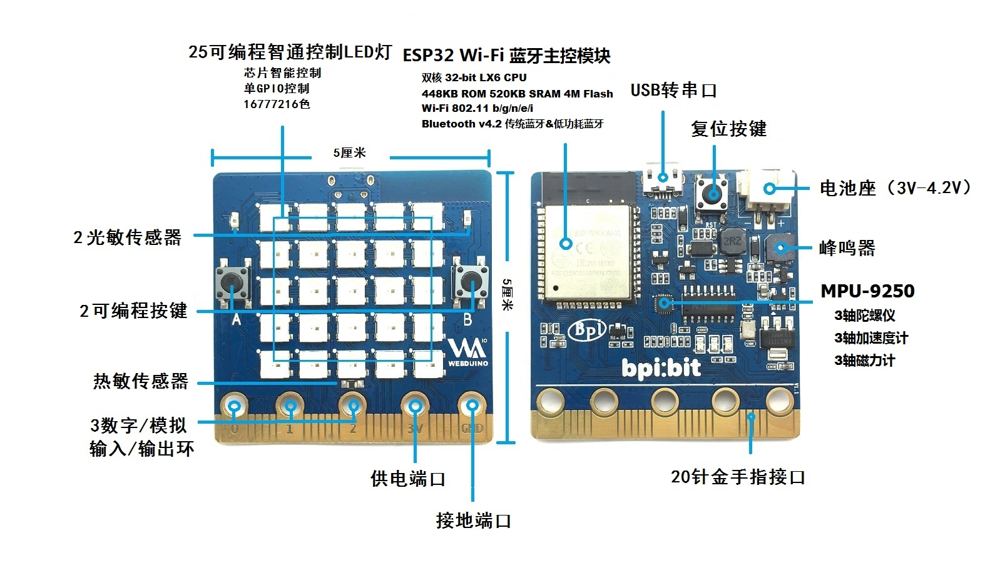

开发板介绍
2022-12-02


本产品采用 ESP-WROOM-32 （ESP32）模组作为核心进行设计，拥有 40nm 工艺、使用 Tensilica LX6 双核32位处理器，频率高达 240 MHz，带有 32 个 I/O 引脚，支持 2.4G Wi-Fi 、蓝牙 4.0 以上等多种通信方式，具备 448KB ROM 和 520 KB SRAM 的内存容量，处理速度达 600 DMIPS，搭配 40nm 工艺的超低功耗，是目前市面上最高效能、最稳定以及最通用的产品之一。
它又名 Webduino Bit ，是 Webduino 最新的开发板，除了原本的功能一应俱全 ( Wi-Fi 控制、多装置并联、协同工作... 等 )，更是内置了许多有趣的组件与传感器。
同时 bpi:bit 开源社区还将持续兼容 micro:bit 的大部分配件以及用法。
外观介绍

Webduino Bit 开发板长 5 公分宽 5 公分，重量约 10 ~ 12 公克，除了下方 20 Pin 的「金手指接口」，更内置一个 25 颗全彩 LED 灯的矩阵，两个光敏电阻、两个按钮开关、一个温度感应电阻、一个蜂鸣器和一个九轴传感器 ( 三轴加速度、三轴陀螺仪与三轴磁力指南针 )，脚位配置如下：
- 全彩 LED 矩阵：A10 ( GPIO 4 )
- 光敏传感器：左上 A0 ( GPIO 36 )、右上 A3 ( GPIO 39 )
- 按钮开关：按钮 A P5 ( GPIO 35 )、按钮 B P11 ( GPIO 27 )
- 温度传感器：A6 ( GPIO 34 )
- 蜂鸣器：P0 ( GPIO 25 )
- 九轴传感器 MPU-9250：P20 ( GPIO 21 )、P19 ( GPIO 22 )
拓展引脚


LED 编号
板子按照 5 * 5 排列方式焊接了 25 颗(编号 0 ~ 24 ) 1600 万色全彩 LED (WS2812) ，所有的 LED 的控制仅使用一个引脚 (GPIO 4) 即可控制。

板子正面 LED 序号排布方式如下（5 * 5）
（将板子正面朝向自己，并结合底盘金手指可知其位置）
版本区别
板子分 1.2 和 1.4 版本等多个版本，版本号标识在板子背面右下角。

产品支持
Webduino
MicroPython
Arduino
硬件设计
引脚占用
外观资料